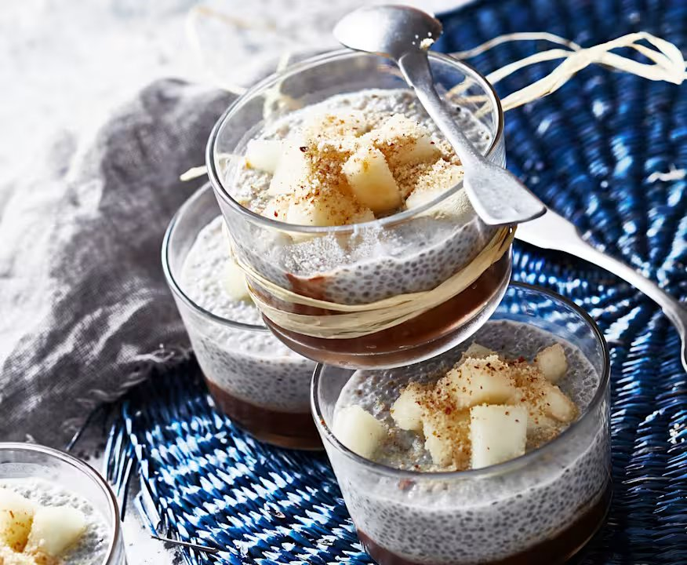

Pudding aux graines de chia et crème au cacao
Ingredients
6×
- 80 g de noisettes
- 550 g de lait d'amande
- 3 c. à s. de cacao non sucré
- 2 c. à s. de fécule de maïs
- 2 c. à s. de purée de noisette
- 60 g de sucre roux
- 300 g de poires
- 5 c. à s. de graines de chia
- 0.5 c. à c. de vanille en poudre

Préparation
Étape 1
Concasser 80 g de noisettes 30 sec/vitesse 8. Réserver.
Étape 2
Mettre 200 g de lait d'amande, 3 c. à s. de cacao non sucré, 2 c. à s. de fécule de maïs, 2 c. à s. de purée de noisette et 30 g de sucre roux dans le bol. Cuire 8 min/100ºC/vitesse 3.
Étape 3
Répartir la crème dans 6 verrines et ajouter 300 g de poires en dés. Réserver 10min au frais.
Étape 4
Mélanger 350 g de lait d'amande, 5 c. à s. de graines de chia, 0.5 c. à c. de vanille en poudre et 30 g de sucre roux 20 sec/vitesse 3. Verser dans les verrines.
Laisser reposer une nuit au réfrigérateur.
Étape 5
Saupoudrer de noisettes concassées au moment de servir.